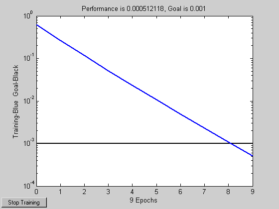

Training a Linear Neuron
A linear neuron is trained to respond to specific inputs with target outputs.
Copyright 1992-2002 The MathWorks, Inc. $Revision: 1.14 $ $Date: 2002/03/29 19:36:18 $
P defines two 1-element input patterns (column vectors). T defines associated 1-element targets (column vectors). A single input linear neuron with a bias can be used to solve this problem.
P = [1.0 -1.2]; T = [0.5 1.0];
ERRSURF calculates errors for a neuron with a range of possible weight and bias values. PLOTES plots this error surface with a contour plot underneath. The best weight and bias values are those that result in the lowest point on the error surface.
w_range = -1:0.2:1; b_range = -1:0.2:1;
ES = errsurf(P,T,w_range,b_range,'purelin');
plotes(w_range,b_range,ES);MAXLINLR finds the fastest stable learning rate for training a linear network. For this demo, this rate will only be 40% of this maximum. NEWLIN creates a linear neuron. NEWLIN takes these arguments: 1) Rx2 matrix of min and max values for R input elements, 2) Number of elements in the output vector, 3) Input delay vector, and 4) Learning rate.
maxlr = 0.40*maxlinlr(P,'bias');
net = newlin([-2 2],1,[0],maxlr);Override the default training parameters by setting the performance goal.
net.trainParam.goal = .001;
To show the path of the training we will train only one epoch at a time and call PLOTEP every epoch. The plot shows a history of the training. Each dot represents an epoch and the blue lines show each change made by the learning rule (Widrow-Hoff by default).
% [net,tr] = train(net,P,T); net.trainParam.epochs = 1; net.trainParam.show = NaN; h=plotep(net.IW{1},net.b{1},mse(T-sim(net,P))); [net,tr] = train(net,P,T); r = tr; epoch = 1; while true epoch = epoch+1; [net,tr] = train(net,P,T); if length(tr.epoch) > 1 h = plotep(net.IW{1,1},net.b{1},tr.perf(2),h); r.epoch=[r.epoch epoch]; r.perf=[r.perf tr.perf(2)]; r.vperf=[r.vperf NaN]; r.tperf=[r.tperf NaN]; else break end end tr=r;

The train function outputs the trained network and a history of the training performance (tr). Here the errors are plotted with respect to training epochs: The error dropped until it fell beneath the error goal (the black line). At that point training stopped.
plotperf(tr,net.trainParam.goal);
Now use SIM to test the associator with one of the original inputs, -1.2, and see if it returns the target, 1.0. The result is very close to 1, the target. This could be made even closer by lowering the performance goal.
p = -1.2; a = sim(net, p)
a =
0.9817